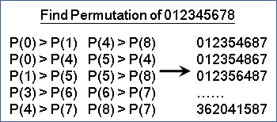
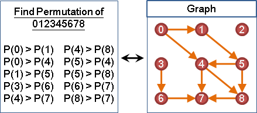
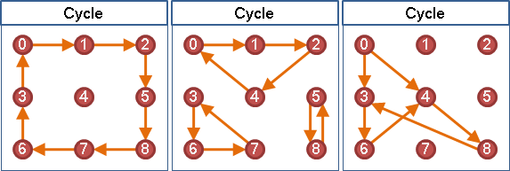
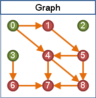
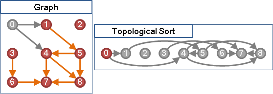
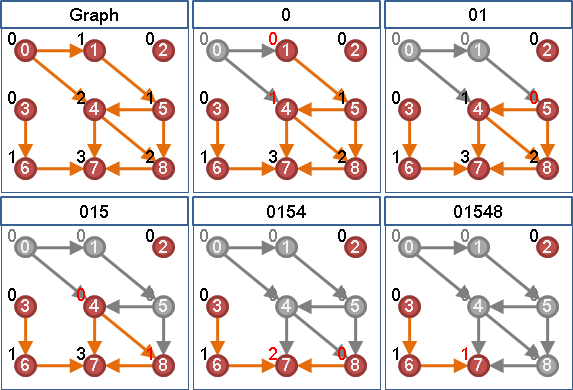

Topological Ordering
楔子
在枚舉所有排列的問題之中，如果我們另外再限制誰要排在誰前方、誰要排在誰後方，那麼在這些限制之下，合理的排列還會剩下哪些呢？
【註：枚舉所有排列，讀者們可另行參考「Enumerate Permutations」一文。】
先後限制與圖
誰要排在誰前方、誰要排在誰後方，其實就是兩兩之間的關係，故可以改用圖來表示：把圖上一條由A點連向B點的邊，想成是A必須排在B前方（B必須排在A後方）。
當然啦，也可以把圖上一條由A點連向B點的邊，想成是A必須排在B後方。不過一般來說我們習慣成自然地使用前者。
Topological Sort與Topological Ordering
「拓撲排序」是排序一張有向圖的點的方式。把圖上一條由A點連向B點的邊，想成是A必須排在B前方（B必須排在A後方）。「拓撲排序」用來找出合理的排列順序，讓每一個點的先後順序，符合每一條邊所規定的先後順序。

「拓撲順序」是指一張有向圖經過「拓撲排序」後，每一個點的先後順序。一張圖有許多種「拓撲順序」。只要不違背圖上每一條邊的先後規定，要怎麼排列圖上的點都行。
圖上不能有環
當圖上有環，拓樸順序就不存在。因為環上每一個點都會有連向自己的邊，意味著環上每一個點必須排在其他點的後方，環上每一個點都不能在排列順序中拔得頭籌，所以合理的排列順序不存在。
找出一個合理的排列順序（Kahn's Algorithm）
要找出合理的排列順序，首先得決定第一點！知道如何找出第一點，那麼就可以循序漸進的再找出第二點、第三點了。
可以作為第一點的點，想必它不必排在其他點後方。也就是說，沒有被任何邊連向的點，就可以作為第一點。如果有很多個第一點，那麼找哪一點都行。
決定第一點之後，那麼剩下所有點都會在第一點後方。所有關於第一點的先後規定，都已經符合了，規定存不存在都無所謂。因此，決定第一點之後，就可以刪去此點，以及刪去由此點連出去的邊──原問題可以遞迴地縮小！
只要反覆尋找沒有被任何邊連向的點，然後刪去此點以及刪去由此點連出去的邊，就可以找出一個合理的排列順序了。
附帶一提，要找出合理的排列順序，也可以由最後一點開始決定！無論要從第一點找到最後一點，或是從最後一點找到第一點，都是可以的。各位可以想想看該怎麼做。
儘管這個問題有遞迴的性質，可以用遞迴語法來實作，但由於遞迴的分支只有一條，故亦可以用迴圈語法。我想大家都會選擇以比較簡單的迴圈語法來實作吧？
實作時，可以利用變數記錄圖上每一個點目前仍被多少條邊連到。尋找沒有被任何邊連向的點，就直接看該變數是不是零；刪去由此點連出去的邊，就順便更新變數的值。
時間複雜度等於一次Graph Traversal的時間。圖的資料結構為adjacency matrix的話，便是O(V^2)；圖的資料結構為adjacency lists的話，便是O(V+E)。
這個演算法可以想成是修改過的BFS：沒有被任何邊連向的點才能放入queue。
UVa 10305 200
找出一個合理的排列順序（Depth-first Search）
DFS離開點的順序，顛倒之後，正好是拓撲順序。
DFS優先走到最深的點，直到不能再深為止。DFS也會優先找出所有最深的點，離開點的原則是最深的點先離開。最深的點當然就是拓撲順序最後的點。
找出所有合理的排列順序
請用Backtracking。此處不詳述了，直接看練習題吧。
UVa 124
計算所有合理的排列順序個數
請用Dynamic Programming，時間複雜度O(2^V * V^2)。
http://blog.csdn.net/tiaotiaoyly/article/details/2712349
小遊戲：http://www.kongregate.com/games/agame/romance-maker。
延伸閱讀：Inhomogeneous Sorting
1 2 3 ... N，一共N個數字，由小到大排列。現在制定了一些兩兩相鄰交換的規則，例如規則「18 ↔ 81」就表示1和8相鄰時可以對調。
請問：一、字典順序最大的排列？二、總共幾種不同排列？
不能兩兩相鄰交換，也就是有先後限制。可以兩兩相鄰交換，也就是沒有先後限制。此問題等價於Topological Sorting！
延伸閱讀：Activity Network（PERT Network）
接下來介紹拓樸順序的實際應用範例。
專案管理領域，經常需要規劃大量工作，這些工作有著工作時間限制、工作先後限制，可以畫成「活動網路」。
然後規劃一套總時程最短的工作方式，並且畫成「甘特圖」。最常用的方法是「關鍵路徑法」，然而它是人工作業的方法。現在請你設計電腦演算法，取代人工作業。
UVa 452 10461 506